Hankuk University of Foreign Studies (HUFS), Seoul, Korea한국외국어대학교 (서울캠퍼스)
B.S. in Language & AI (expected Feb 2028)Language & AI 융합학부 학사 (2028년 2월 졸업 예정)
Mar 2024 – Present2024.03 – 현재
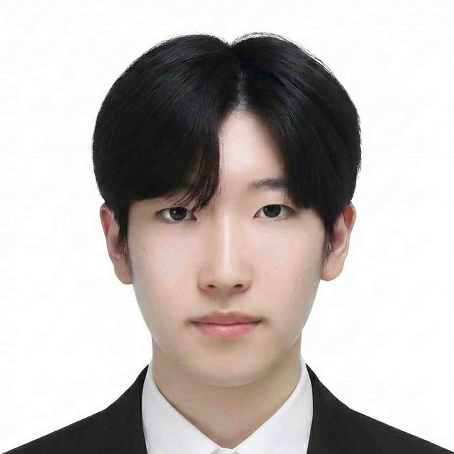
Hi! I'm an undergraduate student in Language & AI at Hankuk University of Foreign Studies (HUFS) and a research intern at the Language Intelligence Lab, advised by Prof. Jun-Hyung Park.안녕하세요! 저는 한국외국어대학교 Language & AI 융합학부에 재학 중이며, 박준형 교수님이 지도하시는 Language Intelligence Lab에서 학부 연구 인턴으로 연구하고 있습니다.
My research focuses on making AI models efficient by understanding what they actually need: how much computation and data does a model really need to perform well, and how can we give it just that? I look inside models during inference and training, and I measure real costs such as tokens and GPU energy alongside accuracy. My research interests span three directions:제 연구는 모델에게 실제로 무엇이 필요한지 이해해 AI를 효율적으로 만드는 데 초점을 둡니다. 모델이 잘 작동하려면 계산과 데이터가 실제로 얼마나 필요하고, 어떻게 딱 그만큼만 줄 수 있을까? 이를 위해 추론과 학습 중 모델 내부를 들여다보고, 정확도와 함께 토큰·GPU 에너지 같은 실제 비용을 측정합니다. 관심 분야는 다음 세 방향입니다.
I'm interested in building AI that uses only what it needs: models that spend computation where a problem demands it, learn from just the data they need, and turn their reasoning into reliable action in the real world.궁극적으로는 필요한 만큼만 쓰는 AI를 만들고 싶습니다. 문제에 필요한 곳에만 계산을 쓰고, 필요한 데이터만으로 배우며, 추론을 실제 세계의 믿을 수 있는 행동으로 옮기는 모델입니다.
Filter by research interest, then select a project to see the problem, method, and results.연구 관심 분야로 거른 뒤 프로젝트를 선택하면 문제, 방법, 결과를 볼 수 있습니다.
Research연구
Completed · Open-source release완료 · 코드 공개
Jul – Nov 20262026.07 – 2026.11View project자세히 보기Earlier projects이전 프로젝트
In Collaboration with KlookKlook 산학협력
Sep – Nov 20252025.09 – 2025.11View project자세히 보기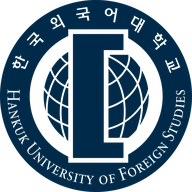
ShallowFrontier · Energy-Efficient LLM Data Selection via Asymmetric Prefix Extrapolation
Research question연구 질문Under a given fine-tuning recipe, which training data does a model need, and how much of it?주어진 fine-tuning 설정에서 모델에게 어떤 학습 데이터가, 얼마나 필요한가?
Data selection is meant to save compute, yet its own cost is rarely counted: strong baselines such as InstructDiff (ACL 2026) repeat calibrate → select → train three times and keep the best round. ShallowFrontier calibrates once, groups the pool from the prompts alone, reads each group’s learning phase from its gradient noise, and selects differently in each phase, with no domain labels, reference answers or data-fitted constants. Every method is compared by accuracy and by end-to-end GPU energy, selection included.데이터 선택은 계산을 아끼기 위한 것이지만, 정작 선택에 드는 비용은 잘 세지 않습니다. InstructDiff(ACL 2026) 같은 강력한 기준선은 ‘보정 → 선택 → 학습’을 세 번 반복한 뒤 가장 좋은 회차를 고릅니다. ShallowFrontier는 보정을 한 번만 하고, 프롬프트만으로 데이터를 묶은 뒤 묶음마다 gradient noise로 학습 국면을 읽어 국면에 따라 다르게 선택합니다. 도메인 라벨, 정답, 데이터에 맞춘 상수는 쓰지 않습니다. 모든 방법은 정확도와 함께, 선택 과정까지 포함한 전 과정 GPU 에너지로 비교합니다.
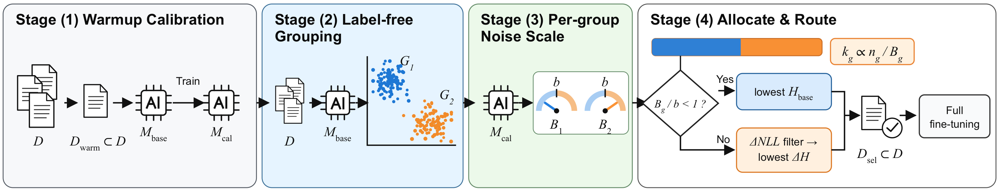
Why two routes? B/b is the noise-to-signal ratio inside one batch. Above 1, which rows enter a batch decides what it teaches, so contrastive selection helps; below 1, the group’s shared direction carries most of each step. On the same Qwen math data, changing only the training recipe moves B/b from 0.27 to 1.49 and flips which rule wins (+2.22 vs. −1.84 points, seed 42).왜 두 경로인가? B/b는 한 batch 안의 잡음 대 신호 비입니다. 1보다 크면 어떤 데이터가 batch에 들어가느냐가 배우는 내용을 정하므로 대조 기반 선택이 유리하고, 1보다 작으면 묶음의 공통 방향이 학습을 이끕니다. 같은 Qwen 수학 데이터에서 학습 설정만 바꿔도 B/b가 0.27에서 1.49로 바뀌고 이기는 규칙이 뒤집힙니다(+2.22점 vs −1.84점, seed 42).
Four testbeds, Qwen2.5-7B and Llama-3-8B on math, medical and mixed math + medical pools, each fine-tuned on a selected 10%. Scores come from five math benchmarks (mean@16) and three medical benchmarks (multiple-choice scoring); energy is the GPU energy of selection plus final fine-tuning, measured with NVML.네 가지 실험 설정(Qwen2.5-7B, Llama-3-8B × 수학·의학·수학+의학 혼합)에서 각 데이터의 10%를 골라 full fine-tuning했습니다. 성능은 수학 벤치마크 5개(mean@16)와 의학 벤치마크 3개(객관식 채점)로, 에너지는 선택과 최종 학습의 GPU 에너지를 NVML로 측정했습니다.
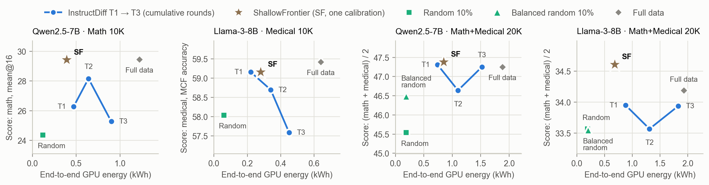
What I took from it: an efficiency claim is only as strong as its accounting, so every number here counts the energy of selection itself.배운 점: 효율성 주장은 비용을 얼마나 정직하게 세느냐만큼만 믿을 수 있습니다. 그래서 모든 수치에 선택 과정 자체의 에너지를 포함했습니다.
When to stop long CoT in 3D spatial question answering · Qwen3.5-9B on SCoT (Li et al., ICLR 2026)
Research question연구 질문Can a frozen model’s long 3D reasoning stop early without losing the answer, and can hidden states tell us when?고정된(frozen) 모델의 긴 3D 추론을 답을 잃지 않고 일찍 멈출 수 있을까? 그리고 hidden state가 그 시점을 알려줄 수 있을까?
Long chain-of-thought lifts accuracy on 3D spatial questions, but the model often keeps reasoning after its answer has formed. This project builds a controlled testbed on a frozen model to ask when the decision forms during reasoning, which stopping rule saves the most tokens without losing the answer, and whether hidden states can tell when to stop. Perception is left to other modules; the focus is the spatial reasoning that follows.긴 chain-of-thought는 3D 공간 문제의 정확도를 높이지만, 모델은 답이 정해진 뒤에도 reasoning을 이어가곤 합니다. 이 연구는 고정된 모델 위에 통제된 실험 환경을 만들어, reasoning 중 판단이 언제 형성되는지, 어떤 중단 규칙이 답을 잃지 않고 토큰을 가장 많이 아끼는지, hidden state가 멈출 시점을 알려줄 수 있는지를 묻습니다. 인식은 다른 모듈의 몫으로 두고, 그 뒤의 공간 추론에 집중합니다.
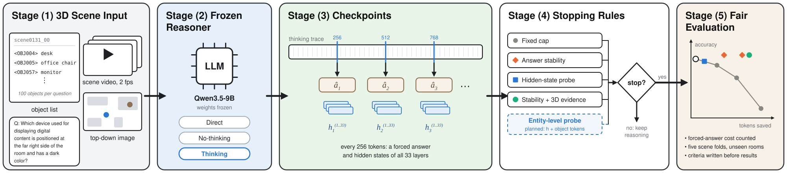
| SCoT task | Questions | Answer | Grading |
|---|---|---|---|
| Relationship analysis | 100 | Distance and direction | Distance within 0.2 m |
| Implicit detection | 100 | Object ID | Acc@0.25, Acc@0.50 |
| Situated planning | 50 | Free-text plan | ROUGE-L, METEOR, AI scores |
| Un-situated planning | 50 | Free-text plan | ROUGE-L, METEOR, AI scores |
| SCoT 과제 | 문제 수 | 답 | 채점 |
|---|---|---|---|
| Relationship analysis | 100 | 거리와 방향 | 거리 오차 0.2 m 이내 |
| Implicit detection | 100 | 물체 번호 | Acc@0.25, Acc@0.50 |
| Situated planning | 50 | 서술형 계획 | ROUGE-L, METEOR, AI 점수 |
| Un-situated planning | 50 | 서술형 계획 | ROUGE-L, METEOR, AI 점수 |
Fair by design. The SCoT validation split is halved by scene and only the tuning half is used, with the final half held out. Five scene folds keep training rooms out of testing, confidence intervals are paired, the cost of forced answers is counted, and the main pass criteria were written before seeing results.공정성을 위한 설계. SCoT validation을 장면 단위로 반으로 나눠 tuning 절반만 쓰고, final 절반은 최종 시험까지 남겨 둡니다. 다섯 개 scene fold로 학습에 쓴 방은 시험에 나오지 않게 했고, paired confidence interval을 쓰며, 강제 답변 비용까지 셈하고, 주요 통과 기준은 결과를 보기 전에 정했습니다.
Preliminary results on the tuning split with one seed, to be confirmed on the held-out final split.tuning split·seed 1개의 예비 결과이며, held-out final split에서 확인할 예정입니다.
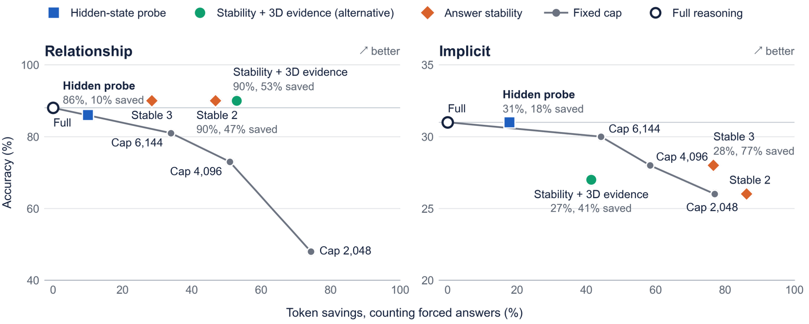
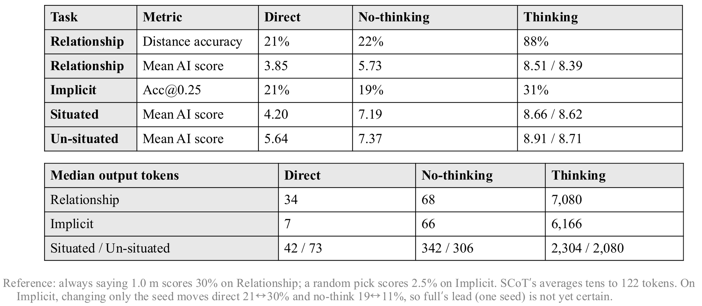
Forced-answer accuracy along the tracetrace 위치별 강제 답변 정확도
Thinking condition · tuning split, 1 seedThinking 조건 · tuning split, seed 1개
Runs longer than 6,144 tokens: share that end right6,144토큰을 넘긴 실행 중 정답 비율
Environment: RTX 4090 · Transformers 5.10.2 · AI grading with Gemma 3 27B (4-bit).환경: RTX 4090 · Transformers 5.10.2 · AI 채점 Gemma 3 27B (4-bit).
MuJoCo · built on the open-source jev-drone stackMuJoCo · 오픈소스 jev-drone 스택 기반
Research question연구 질문What does it take for a language model’s correct high-level decision to become a successful action?언어 모델의 올바른 상위 판단이 성공한 행동이 되려면 무엇이 필요할까?
A hierarchical controller for a MuJoCo quadrotor: a compact language-model decision module reads a structured scene summary and natural-language option rubrics and chooses one of six maneuvers, while a fast low-level controller executes it. The project replaces a proprietary judgment API with an open model that runs on a laptop, trains it, and studies why correct decisions do not always become completed flights.MuJoCo 쿼드로터의 계층형 제어 구조입니다. 작은 언어 모델 기반 판단 모듈이 구조화된 장면 요약과 자연어 선택지 기준(rubric)을 읽고 기동 6개 중 하나를 고르면, 빠른 하위 제어기가 이를 실행합니다. 유료 판단 API를 노트북에서 돌아가는 오픈 모델로 바꾸고 학습시키며, 올바른 판단이 왜 늘 완주로 이어지지 않는지 연구합니다.
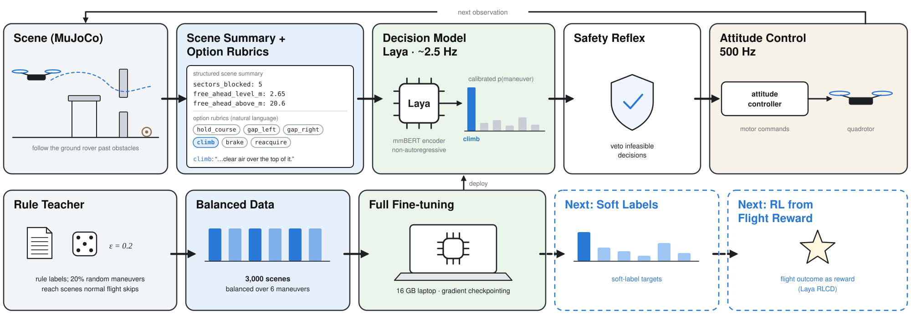
One map with 10–20 flights per condition; early results that shape the next steps.맵 1개, 조건당 10–20회 비행의 초기 결과로, 다음 단계를 정하는 근거입니다.
Correct decisions are not completed flights올바른 판단 ≠ 완주한 비행
One map · 10–20 flights per condition맵 1개 · 조건당 10–20회 비행
Flight completion by condition조건별 비행 완주율
Klook’s existing pipeline translated travel content into many languages with a single Gemini prompt, which produced unnatural or wrong output in some languages. I analyzed real outputs, classified the error types, and refined the prompts language by language against a quality metric.Klook의 기존 파이프라인은 하나의 Gemini 프롬프트로 여행 콘텐츠를 여러 언어로 번역했고, 일부 언어에서 부자연스럽거나 틀린 결과가 나왔습니다. 실제 출력을 분석해 오류 유형을 분류하고, 품질 지표를 기준으로 언어별 프롬프트를 개선했습니다.
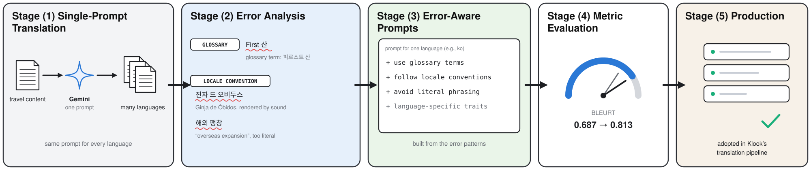
Error types found in real outputs실제 출력에서 찾은 오류 유형
Gemini, single prompt for every language · Korean examplesGemini, 모든 언어에 같은 프롬프트 · 한국어 예시
The place name was left in English instead of the glossary term.용어집 표기 대신 영어 지명을 그대로 남겼습니다.
Transliterated by sound instead of following Korean localization conventions.현지화 관례를 따르지 않고 발음 그대로 옮겼습니다.
Translated too literally for the context.문맥에 비해 지나치게 직역했습니다.
What I took from it: an improvement means the most when it reaches real users.배운 점: 실험에서의 개선은 실제 사용자에게 닿을 때 가장 큰 의미를 갖습니다.
Klook logo: Wikimedia Commons (CC BY-SA 4.0).Klook 로고: Wikimedia Commons (CC BY-SA 4.0).
Team rAIse (5 members) · SOWON HOPE Expo 2025, Kwangwoon Univ.rAIse 팀 (5인) · 2025 소원 H.O.P.E. 창의보조공학 경진대회, 광운대학교
Lip-reading output often distorts whole sentence structure (e.g., ‘보내니까 좋다’ recognized as ‘보낸이였어’), so tokens no longer align with the target and token-level correction such as BERT masking cannot recover the sentence. We built a two-stage pipeline in which a T5 Seq2Seq post-editor regenerates the whole sentence.립리딩 출력은 ‘보내니까 좋다’를 ‘보낸이였어’로 인식하는 것처럼 문장 구조 자체가 왜곡되는 경우가 많아, 정답 문장과 토큰이 대응하지 않고 BERT masking 같은 토큰 단위 교정으로는 복원할 수 없습니다. 저희는 T5 Seq2Seq 후처리 모델이 문장 전체를 다시 생성하는 2단계 파이프라인을 만들었습니다.
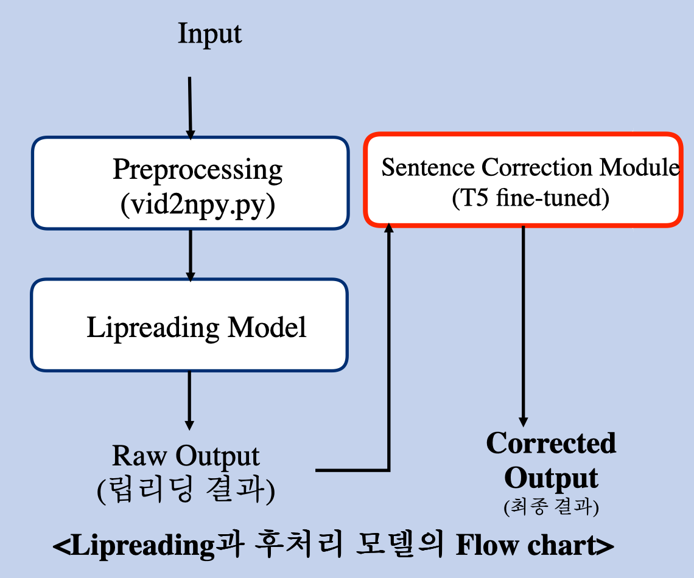
Staged training. The post-editor first learns from 2.2M public sentences (spelling and grammar, speech-recognition post-editing, and over-correction data; 5 epochs), then from about 3,000 pairs built by matching the lip-reading model’s own outputs to reference sentences (10 epochs).단계적 학습. 후처리 모델은 먼저 220만 건의 공개 데이터(맞춤법·문법, 음성인식 후처리, 과교정 검증; 5 epoch)로, 다음으로 립리딩 모델의 실제 출력을 정답 문장과 짝지어 만든 약 3,000쌍(10 epoch)으로 학습했습니다.
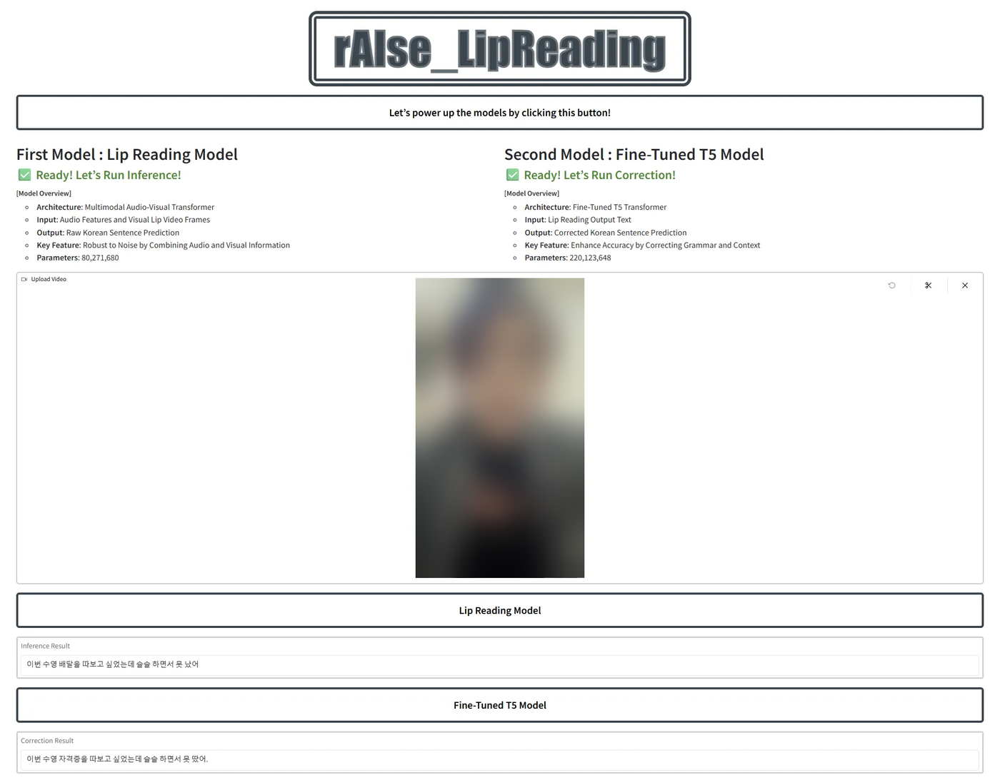
Post-editing, before and after후처리 전후 비교
Real examples from our demo · Korean데모의 실제 예시 · 한국어
The system won the Encouragement Award at SOWON HOPE Expo 2025. Its remaining limits, real-time latency and noisy conditions, led me to the efficiency questions I study now.이 시스템으로 2025 소원 H.O.P.E. 창의보조공학 경진대회에서 장려상을 받았습니다. 남은 한계였던 실시간 처리와 소음 환경은 지금 연구하는 효율성 문제로 이어졌습니다.